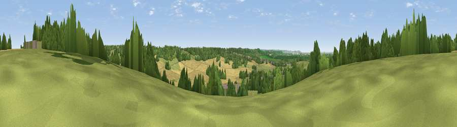

Viewpoint near Old Down
#21452 in England · top 31% of its area beats it · near Old Down · access?Where it is
The exact computed spot (ST 61225 87025). Click the marker for map links.
Public access: no public right of way or access land is recorded at this exact spot — it may be on private land. Computed from Natural England's CRoW access layer and OpenStreetMap rights of way — not the legal definitive map. Always verify locally.
The view, rendered

A 360° render of this exact spot computed from the terrain model, tree cover and land cover — summer colours, afternoon light, calibrated against photographs of famous viewpoints. Real trees, hedges and buildings will differ in detail.
The panorama
Grey silhouette: terrain skyline in each direction (720 bearings, Earth curvature and refraction included). Dashed green: skyline with trees (+15 m) and buildings (+8 m) as obstacles. Blue strip: how far the ground is visible on each bearing.
Where the view opens
Wedge length = distance to the farthest visible ground on that bearing (vegetation-aware). Rings at 10, 25 and 50 km.
What fills the view
44% grassland · 28% cropland · 21% woodland · 5% built-up · 1% water
Angular shares of the visible panorama (visual magnitude), not map area. Landscape diversity 0.54 (0–1 Shannon).
Key numbers
More beautiful places nearby
The staircase of upgrades: each row has a higher view potential than everything closer. Driving times are estimates from straight-line distance, calibrated against real road routing — check an actual route before setting out.
| Place | Direction | Drive | Score |
|---|---|---|---|
| Viewpoint near Littleton-upon-Severn | NNW · 3 km | ~7 min | 52.6 |
| Viewpoint near Almondsbury | SSW · 3 km | ~8 min | 54.8 |
| Viewpoint near Almondsbury | SSW · 4 km | ~9 min | 68.3 |
| Viewpoint near Hewelsfield | NNW · 14 km | ~26 min | 69.6 |
| Viewpoint near Hewelsfield | NNW · 15 km | ~26 min | 70.7 |
| Viewpoint near North Nibley | ENE · 16 km | ~28 min | 76.3 |
| Viewpoint near Stinchcombe | NE · 17 km | ~29 min | 80.5 |
| Garway Hill | NNW · 42 km | ~62 min | 84.6 |
51.58074, -2.56098 · source: screening · position refined by local search. Computed location — check access rights before visiting.